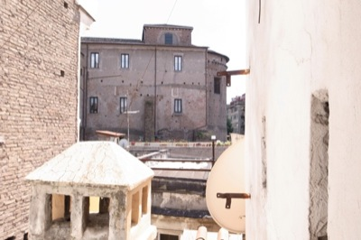

Around My Desk
Instead of writing today, I took some photos, something I never do. I intended to describe where I write and some of what I see day-to-day, to leave words for the ease of images.
The Church of San Clemente out the window to my right.

The apse of Santi Quattro Coronati out the small window in front of me.
Basil on the kitchen window sill.
La Storta: black cat on my desk.
· · · · · · · · · · · · · · · · · · · ·